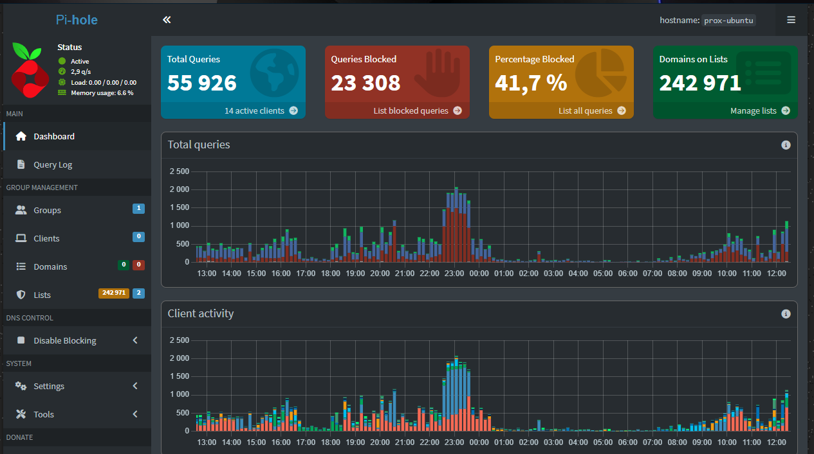

Blog & Projekty
Praktické projekty, servery a experimenty
← Zpět na CV
Domácí server & lab
📅 5. 1. 2026
Domácí server & lab
📅 5. 1. 2026
Můj domácí server běží na Proxmox VE – open-source
virtualizační platformě, která mi umožňuje spravovat více
virtuálních strojů a kontejnerů na jednom fyzickém hardwaru.
Server využívám pro hostování herních serverů, webových
aplikací, Pi-hole a testování různých operačních systémů.
Hardware:
i3-4170, 8 GB RAM, 128 GB SSD + HDD

Pi-hole – síťový DNS filtr
📅 6. 1. 2026
Pi-hole – síťový DNS filtr
📅 6. 1. 2026Blokování reklam na všech zařízeních. Pi-hole provozuji jako centrální DNS server v domácí síti. Slouží k blokování reklam, trackerů a škodlivých domén přímo na úrovni DNS – bez nutnosti instalace doplňků na jednotlivá zařízení.
Nasazení probíhá na Linux serveru (Ubuntu) běžícím jako virtuální stroj v Proxmoxu. Pi-hole je integrován s routerem, který přesměrovává veškerý DNS provoz klientů právě na tento server.
- DNS filtering & blocking
- Statistiky provozu a dotazů
- Vlastní blacklist / whitelist
- Integrace s DHCP / routerem
Nevýhody:
- Někdy blokuje i užitečný obsah
- Vyžaduje údržbu a aktualizace
- Možnost selhání serveru ovlivní celou síť
